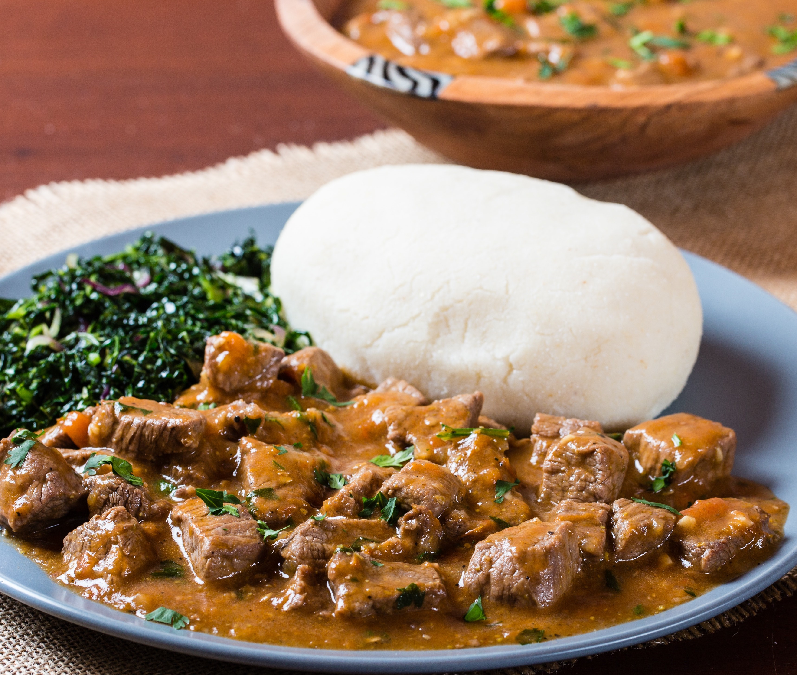
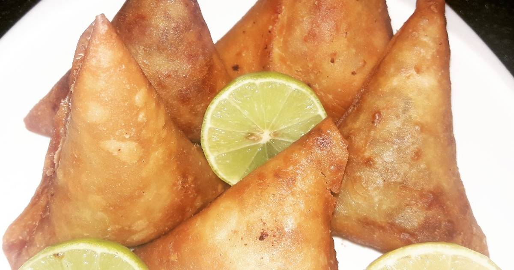
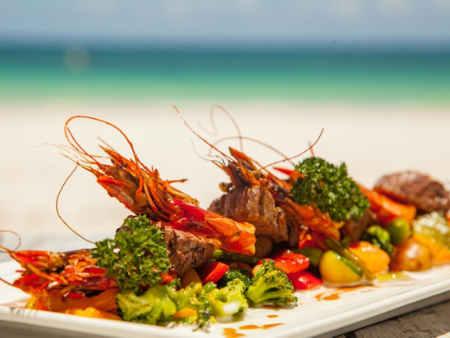
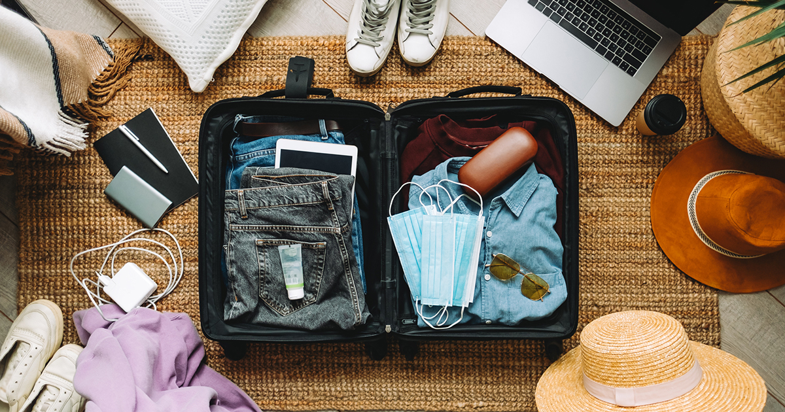
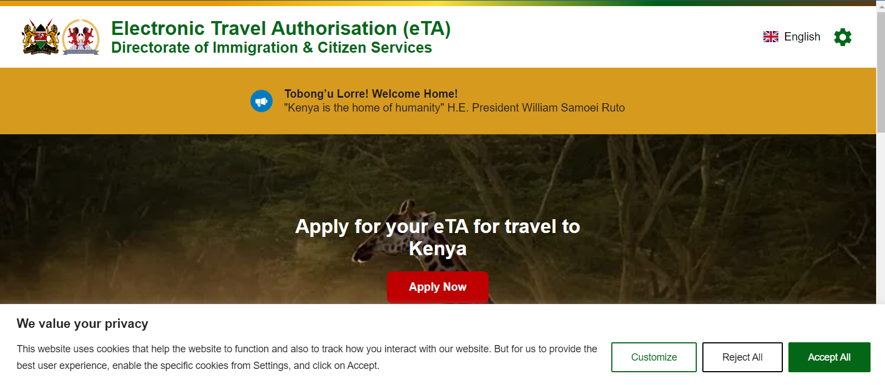
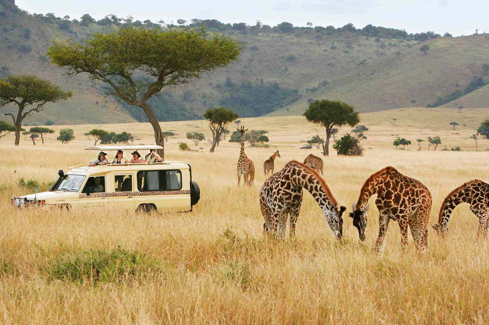
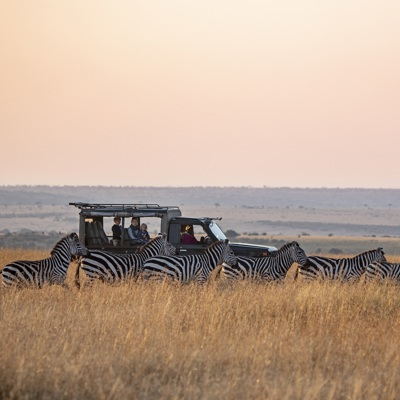

<div class="mt-24 ">
    <div class="relative">
        
        <div class="absolute top-24 left-14 md:left-52 md:top-44 lg:top-48 lg:left-72 ">
            <p class="font-mono font-bold text-4xl md:text-5xl lg:text-6xl xl:text-7xl text-black" >FOOD IN KENYA </p>
        </div>


        <div class="mt-20 md:grid md:grid-cols-12 relative">
            <div class="md:col-start-2 md:col-span-6 px-4 md:pl-0 opacity-80 ">
                
                <p class="pt-10 text-2xl text-amber-500 font-bold">Eating in Kenya. Yes but what?</p>
                <p class="uppercase pt-4 font-extrabold">Kenyan cuisine is made up of numerous specialties based on meat and vegetables, but above all coconut milk.</p>
            <p class="text-2xl text-red-800 uppercase font-medium opacity-85 pt-10">Here's what to taste of local food</p>
            <p class="text-sm leading-6 opacity-80">
                In the past the source of food depended on what nature could offer so traditional foods are very simple but also very substantial,

                <br><br>The main ingredient is <strong>madafu</strong> , or coconut milk. This is not the liquid found inside the nut (which is instead flavored water), it is actually obtained by scraping the inside of the shell with a tool called mbuzi. The coconut meat is then placed in a container (kifumbu) made with palm leaves into which water is poured and with a filtering system the real coconut milk comes out.   Madafu is used as a condiment for many grilled dishes such as fish ( <strong>samaki wa kupaka</strong> ), meat ( <strong>nyama choma</strong> ), chicken ( <strong>kuku masala</strong> ) but also as a condiment for rice (<strong>pilau </strong> ).

                 <br><br>Another dish that characterizes Kenya is <strong>ugali </strong> , a polenta made with water and corn flour. Given the cheapness of the product, it is used in almost all Kenyan families at every meal and is often used as a spoon to collect food from the plate since the custom in these parts is to eat with the hands.

                 <br><br>In Kenya, leavened bread is not used but you can find <strong>chapati</strong> , very similar to our piadina, <strong>mandaazi</strong> (not very sweet rolls filled and fried) or  <strong>mkate mayai</strong> , “African pizza”.
                 <br><br>All dishes are accompanied by vegetables such as malenge (pumpkins), mchicha (spinach), githeri (beans and corn), supuja pojo au maharagwe (lentil and bean soup)

                 <br><br>Samosas are another dish that you will find in every typical restaurant. They are small rolls of dough filled with meat, fish or vegetables. On our excursion to the Crab Shack you can taste some delicious ones filled with crab .

                 <br><br>Of course there is no shortage of fish, especially in the coastal area: you can find <strong>Red Snapper </strong>, yellowfin tuna (but also the rarer blackfin), <strong>taffi</strong> (small fish that cost very little) but also squid, octopus, grouper, grey mullet, sea bream, prawns, crabs and lobsters.

                 <br><br>Don't forget fruit: in addition to coconut and bananas, mango, papaya or passion fruit are delicious.     
            </p>
            
            <p class="pt-10 text-2xl text-amber-500 font-bold">What should I pay attention to?</p>
            <p class="text-sm leading-6">
                Surely the first rule is not to drink tap water which is not always drinkable and which could in any case lead to intestinal disorders. Shops and restaurants are well stocked and you can find water in many places without problems, we recommend that you also use it to brush your teeth.

               <br><br> Even though the country is predominantly Muslim, you can also find excellent local beer at very affordable prices, as well as Coke, Fanta, Sprite and the more common drinks.
                
               <br><br> Alcoholic beverages and spirits are easily found but are more expensive than in Italy. You can easily find excellent Italian and South African wine in the various restaurants in Watamu and Malindi, but also in local shops at affordable prices.
               
               <br><br> If you suffer from intestinal disorders, always prefer cooked foods, fruit with peel and avoid ice if you are not sure of its origin.
            </p>
            
            
            
            </div>
            <div class="hidden md:block md:col-start-9 md:col-span-4 md:space-y-0">
                <div>
                    <p class="font-mono font-bold text-xl">RECENT ARTICLES</p>
                
                <p routerLink="/leaving" class="pt-4 text-gray-500 hover:text-black cursor-pointer">10 Things to know before leaving.</p>
                </div>
                <div>
                    
                
                <p routerLink="/packing" class="pt-4 text-gray-500 hover:text-black cursor-pointer">What to pack.</p>
                </div>
                <div>
                   
                
                <p routerLink="/visa-kenya" class="pt-4 text-gray-500 hover:text-black cursor-pointer">Visa for Kenya</p>
                </div>
                <div>
                    
                
                <p routerLink="/safari-rules" class="pt-4 text-gray-500 hover:text-black cursor-pointer">Rules during safari</p>
                </div>
                <div>
                    
                
                <p routerLink="/when-to-go" class="pt-4 text-gray-500 hover:text-black cursor-pointer">When to go?</p>
                </div>
    
                
           </div>
        </div>
</div>
